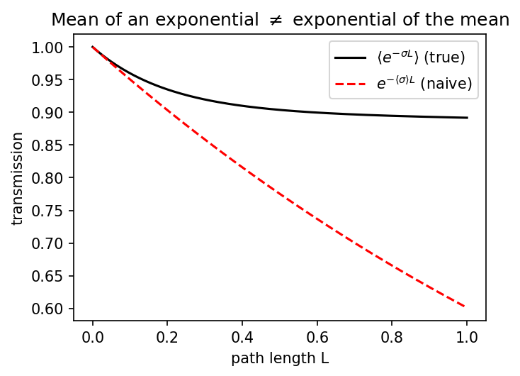

Chapter 1: Why non-grey?
Almost every climate-modelling course starts with a radiating planet at one temperature seen through one atmosphere at one opacity. The grey atmosphere. From it you get Milne’s solution, a lapse rate, and a qualitative sense of the greenhouse effect. You do not, however, get stratospheric cooling. You do not get the CO₂ forcing. You do not get anything that a satellite sees when it looks down.
This chapter shows why.
The mean of an exponential is not the exponential of the mean
Consider a single spectral interval of width \(\Delta\nu\) containing many absorption lines. The monochromatic transmission through a column of path length \(L\) at wavenumber \(\nu\) is
\[T_\nu(L) = \exp\!\left(-\sigma(\nu)\, L\right).\]
The band-averaged transmission is
\[\langle T(L)\rangle = \frac{1}{\Delta\nu}\int T_\nu(L)\,d\nu = \left\langle e^{-\sigma L}\right\rangle.\]
A grey model replaces this with \(e^{-\langle\sigma\rangle L}\). These two are equal only when \(\sigma(\nu)\) is constant across the band. For a realistic band — a few strong lines sitting on top of weak continuum — they are wildly different.

The physical interpretation: most of the transmitted energy comes through the weak part of the band; most of the absorption happens in the strong part. Averaging \(\sigma\) first smears this separation out.
If we want a radiation scheme that is cheap but not wrong, we need to represent \(\langle e^{-\sigma L}\rangle\) directly — not \(e^{-\langle\sigma\rangle L}\). That leads to the k-distribution (Chapter 3).
Non-grey phenomena you get for free
Once you have proper band-averaged transmission you recover:
Stratospheric cooling. The window (8–12 μm) is nearly transparent; the CO₂ band at 15 μm is opaque. High in the stratosphere the atmosphere emits in both regions, but only absorbs significantly in the CO₂ band. Net result: cooling. A grey model cannot do this — it has only one opacity and cannot separate emission from absorption at different wavelengths.
CO₂ forcing. Doubling CO₂ moves the effective emission level in the 15 μm band upward to colder temperatures, reducing OLR from that band. The window band is unaffected. Broadband OLR drops. A grey model cannot separate these — it either doubles all opacity (enormous forcing) or nothing (zero forcing).
Solar heating of the stratosphere. UV is absorbed by O₃; the visible is largely transparent. A grey shortwave model cannot separate these.
The picket-fence scheme you will implement in the remaining chapters is the minimal non-grey model that captures all three phenomena.
Open examples/spectral_radiation_anatomy.ipynb and run the first three cells. You will see the window/CO₂-band contrast directly from CorkLongwaveRadiation’s per-band flux diagnostics.